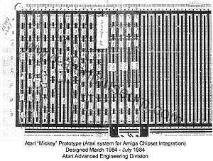

|
Greeting fellow Atari enthusiasts...
After years of
research, thanks to research teamwork of Marty Goldberg and myself - in
2 weeks a new page of information will be posted with a history of
Atari's "Advanced Engineering Division" and how it all lead up to Atari
developing its version of the Amiga Lorraine as an Atari console system.
During the trip through this historical look through Atari's advanced
designs - never before seen notes, photo's, documents and emails on
Atari systems such as the 1600XL Atari IBM PC system, Gaza, Sierra,
GUMP, Eskimo/Dogsled and Explorer. Atari's work on its own BSD Unix OS
with its own GUI - codenamed "Snowcap" and then we lead up to project
"Mickey" - Atari's Amiga powered system.
Afterwards you'll be able to peruse through contracts and court
documents and see what really transpired during the summer of 1984 which
shatters the myths and mis-history of Jack Tramiels involvement with
buying Amiga - but shows how in the end he sued the heck out of Amiga
and then Commodore...
So here is a juicy little treat to wet your appetite.

Regards,
Curt.
|
{kind=link}